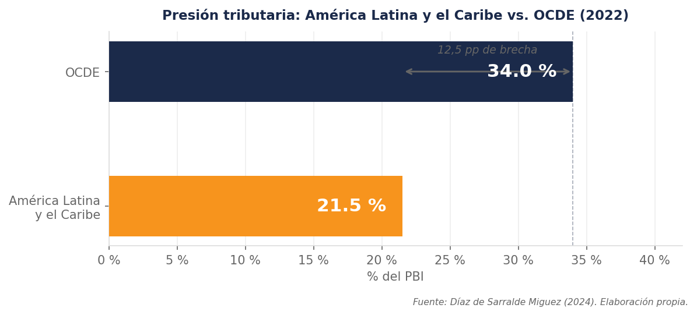

¿Por qué el Estado peruano carece de recursos suficientes para financiar servicios básicos como salud y educación? ¿Qué tan costoso resulta para el país que miles de contribuyentes incumplan con sus obligaciones tributarias?
Estas preguntas remiten a uno de los problemas estructurales más persistentes de la economía peruana: la evasión tributaria. Según Díaz de Sarralde Miguez (2024), los países de América Latina y el Caribe recaudan en promedio solo el 21,5 % del PBI en impuestos, cifra que contrasta con el 34 % registrado en los países de la OCDE. En el Perú, esta brecha se agrava por la baja cultura tributaria, las elevadas tasas impositivas y la informalidad laboral, factores que reducen la base imponible disponible para la recaudación fiscal.

Este conjunto de condiciones genera un círculo vicioso en el que la escasez de recursos limita la inversión pública y perpetúa las desigualdades sociales y económicas. Por ello, el presente trabajo analiza la evasión tributaria y su impacto en la recaudación fiscal en el Perú durante el periodo 2019-2024.
En los siguientes párrafos, se examinarán cinco aspectos centrales: las características de la evasión tributaria y su incidencia en el sistema fiscal peruano; la evolución de la recaudación fiscal en ese periodo; la relación entre el incumplimiento tributario y los niveles de recaudación; el impacto directo de la evasión en la disminución de los ingresos fiscales; y las consecuencias económicas y sociales derivadas de la insuficiente recaudación.